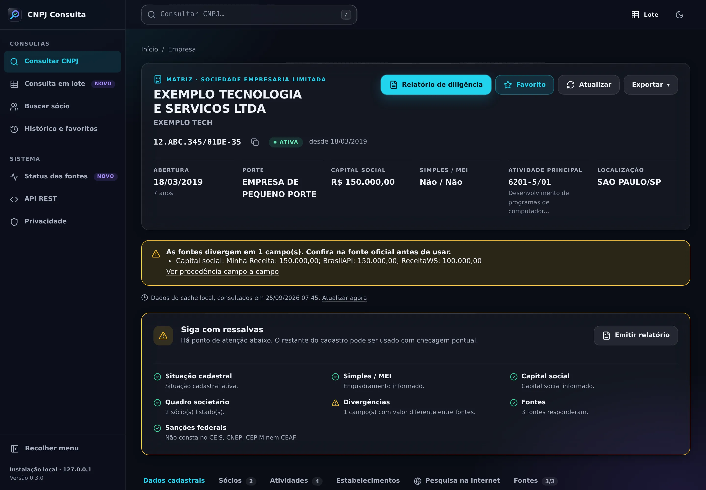
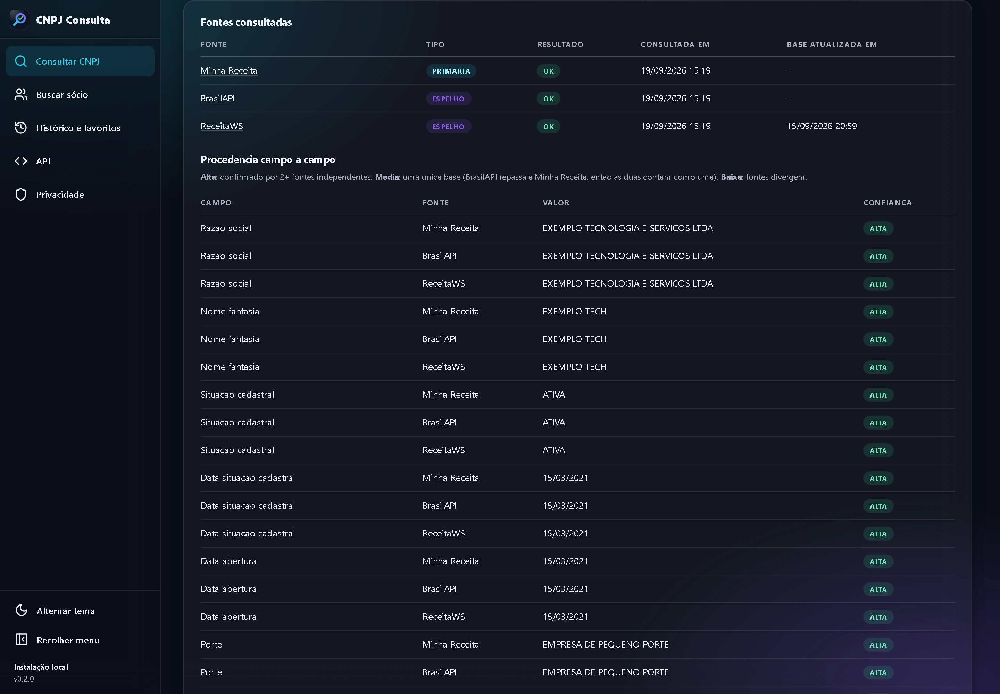
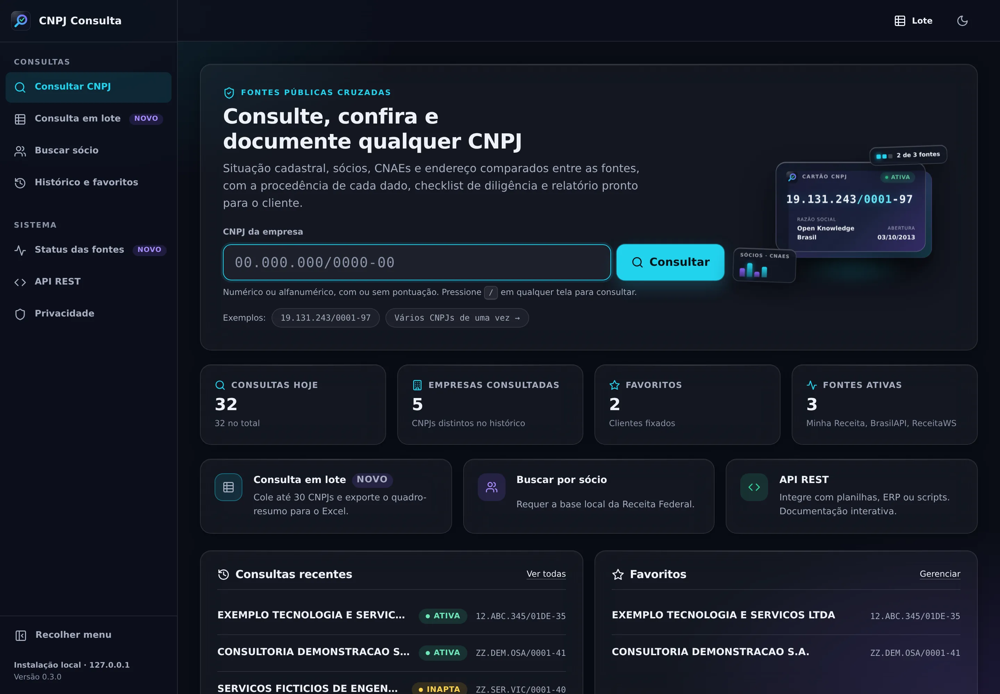
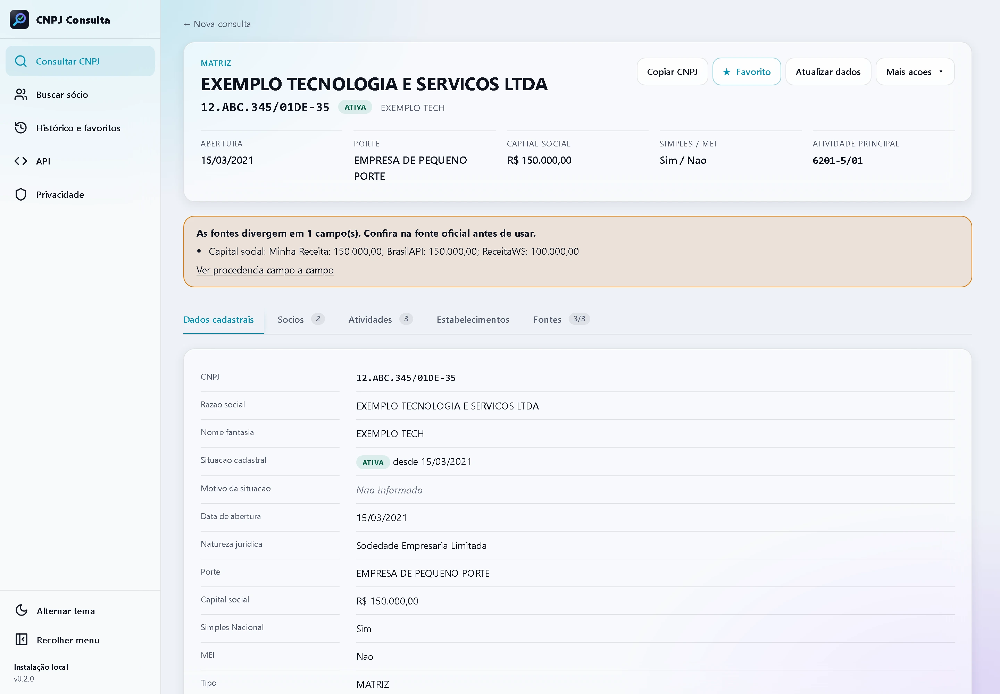
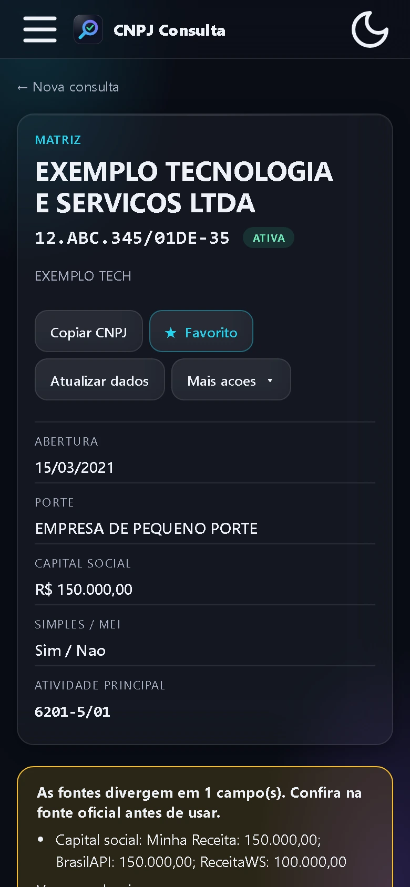

Escritórios de contabilidade
Abertura, alteração e conferência de clientes, com um dossiê pronto para enviar.
- Situação, natureza jurídica, CNAEs e QSA conferidos
- Simples Nacional e MEI à vista
- Relatório A4 com a capa do escritório
Para contabilidade, compliance, jurídico e compras
Cruze até cinco fontes públicas em uma só consulta, veja onde elas divergem e a confiança de cada campo, e entregue ao cliente um relatório de diligência em A4. Grátis, open source e rodando no seu computador.
Empresa

Fontes e procedência

Consulta

Tema claro

Celular

Capturas reais do app rodando localmente, com dados fictícios (o CNPJ alfanumérico é o exemplo publicado pela Receita Federal).
Do cadastro de um cliente novo à homologação de fornecedores: o mesmo app, com a fonte e a data de cada dado para você justificar a decisão.
Abertura, alteração e conferência de clientes, com um dossiê pronto para enviar.
Diligência de fornecedores e clientes, com registro do que cada fonte informou.
Levantamento rápido antes de contratos, notificações e ações.
Homologação de fornecedores sem abrir site por site.
Uma consulta comum devolve o que uma API respondeu. O CNPJ Consulta compara várias fontes e mostra o que está confirmado, o que diverge e de onde cada dado veio.
Novo nesta versão
Checklist de seis pontos, veredicto e capa com o nome do escritório, o responsável, o destinatário e a referência. Vira PDF pelo próprio navegador.
Ver o relatórioAtalhos prontos para buscadores, processos, certidões oficiais e mapas, na página da empresa. Nada é enviado sem o seu clique.
Ver os atalhosCole até 30 CNPJs e receba uma tabela-resumo com situação, UF, porte, Simples/MEI e conflitos. Exporte em CSV.
Uma página mostra a saúde de cada fonte: último sucesso, última falha, erros e limites de consulta.
Um campo de CNPJ em todas as páginas do app. Aperte / em qualquer tela para começar a digitar.
O essencial
Minha Receita, BrasilAPI, ReceitaWS (e CNPJ.ws, opcional) respondem ao mesmo tempo. Cada fonte tem limite, timeout e retentativa próprios: uma fonte lenta nunca trava as outras.
Cada valor mostra qual fonte o informou, quando foi consultado e a data de atualização da base. O que falta aparece como “não informado”, nunca inventado.
Quando as fontes divergem, o app avisa e mostra o valor de cada uma, sem escolher em silêncio. Diferença só de formato (1000.00 × 1.000,00, acentos) não conta como conflito.
Um selo resume o quanto as fontes independentes concordam em cada campo.
Valida o formato numérico e o novo, com letras nas 12 primeiras posições (vigente desde julho de 2026). Os dois dígitos verificadores continuam numéricos.
Com a base local da Receita, encontre empresas pelo nome do sócio (palavras em qualquer ordem, sem acento), pela UF e pelo município da sede.
E também
Importe a base oficial da Receita Federal e consulte sem depender das APIs. Com ela ativa, tem prioridade sobre as demais fontes.
SQLite local, com cache de 24 h por padrão. Apague tudo quando quiser.
CSV pronto para o Excel (separador ; e BOM UTF-8).
Web em português com tema claro e escuro, CLI e OpenAPI em /docs.
Janela deslizante por fonte: no limite, ela é pulada na hora. HTTP 429 pausa a fonte, sem repetir.
CPF de sócio sempre mascarado. O app não tenta descobrir dados pessoais nem monta perfis.
Em cada empresa, o app confere seis pontos do cadastro e resume tudo em um veredicto. O relatório sai em A4, com a capa do seu escritório, e vira PDF pelo próprio navegador.
Capa personalizável: Escritório Responsável Destinatário Referência
Escritório Exemplo Contabilidade
Relatório de diligência cadastral
EXEMPLO TECNOLOGIA E SERVICOS LTDA
EXEMPLO TECH
12.ABC.345/01DE-35ATIVA
Cadastro ativo, sem ressalvas neste recorte
As fontes consultadas não apontaram conflito nem situação irregular. Isto não substitui certidão oficial.
Divergências entre fontes
Nenhuma: fontes alinhadas neste recorte.
Siga com ressalvas
Há ponto de atenção abaixo. O restante do cadastro pode ser usado com checagem pontual.
Pendências
Divergências entre fontes
Capital social: Minha Receita: 150.000,00; BrasilAPI: 150.000,00; ReceitaWS: 100.000,00
Não use este recorte sozinho
Há ponto crítico no cadastro. Confira na Receita Federal antes de contratar ou protocolar.
Pendências
Cadastro
Quadro societário
SOCIO EXEMPLOSócio-Administrador***.345.678-**
Gerado com o CNPJ Consulta · Fontes: Minha Receita, BrasilAPI, ReceitaWS · Não substitui certidão oficial.
A aba Pesquisa na internet reúne atalhos para buscadores, reputação, processos, certidões oficiais e mapas, já montados com a razão social e o CNPJ. Você decide o que abrir.
Cada atalho abre o site em uma nova aba. O app não pesquisa nada por conta própria.
Razão social, nome fantasia, CNPJ e endereço da sede. Nomes de sócios nunca entram nas buscas (LGPD).
Configure a Brave Search API com a sua própria chave, ou uma instância SearXNG sua, e veja os resultados sem sair da tela.
Buscadores
Reputação e processos
Certidões e cadastros oficiais
Onde o site oficial pede captcha, um botão copia o CNPJ para você colar.
Localização
Presença digital
Quatro etapas, todas no seu computador. A conciliação é o coração do app: ela decide o que está confirmado e o que precisa de conferência.
Confere os dígitos verificadores (módulo 11), numéricos ou alfanuméricos, antes de qualquer requisição. Entrada inválida nunca sai do seu computador.
As fontes habilitadas respondem juntas, com timeout de 10 s por requisição e teto de 20 s por consulta. Retentativa só em 5xx e falha de rede.
Normaliza cada campo, compara, prioriza fontes primárias sobre espelhos e marca os conflitos com o valor de cada fonte.
Interface web, relatório, CLI ou API REST. O resultado fica no cache local (24 h por padrão) e no histórico.
Três fontes entram; uma resposta conciliada sai.
Mesma empresa fictícia das capturas de tela. Três fontes, um campo com valor diferente.
| Campo | Minha Receita | BrasilAPI | ReceitaWS | Confiança |
|---|---|---|---|---|
| Situação | ATIVA | ATIVA | ATIVA | Alta |
| Natureza jurídica | Sociedade Empresária Limitada | Sociedade Empresária Limitada | 206-2 - Sociedade Empresária Limitada | Altasó o formato muda |
| Capital social | 150.000,00 | 150.000,00 | 100.000,00 | Baixa |
As fontes divergem em 1 campo(s). Confira na fonte oficial antes de usar.
Capital social: Minha Receita: 150.000,00; BrasilAPI: 150.000,00; ReceitaWS: 100.000,00
O mesmo algoritmo do app (módulo 11) roda aqui, no seu navegador. Não há formulário nem requisição: o que você digita não sai desta página.
No formato novo, cada caractere vale ord(c) − 48: dígitos de 0 a 9 e letras de A a Z de 17 a 42. O resto do cálculo é o mesmo de sempre.
Dígitos corretos provam que o número é bem formado, não que a empresa existe. Para saber se existe e quem é, o app consulta as fontes.
Formato alfanumérico (o novo), DV 35. Isso prova que o número é bem formado, não que a empresa existe: para isso o app consulta as fontes.
Os exemplos são números de teste: o numérico é o da Open Knowledge Brasil (usado na documentação da Minha Receita) e o alfanumérico é o exemplo oficial da Receita Federal.
Um site de consulta avulsa resolve uma checagem rápida. Quando o dado precisa ser conferido e documentado, faz diferença ver várias fontes e o que cada uma disse.
| Recurso | CNPJ Consulta | Consulta avulsa em site |
|---|---|---|
| Fontes por consulta | Até 5, em paralelo | Em geral, uma |
| Procedência de cada campo | Fonte e data por campo | Raramente exibida |
| Conflitos entre fontes | Sinalizados, com o valor de cada fonte | Não se aplica com uma fonte só |
| Confiança por campo | Alta, média ou baixa | Em geral, não |
| Relatório de diligência em A4 | Veredicto e capa do escritório | Em geral, não |
| Consulta em lote | Até 30 CNPJs, com CSV | Em geral, um por vez |
| API REST e CLI | Locais, com OpenAPI | Varia; às vezes paga |
| Onde ficam suas consultas | Só no seu computador | Passam pelo servidor do site |
| Custo | R$ 0, open source (MIT) | Grátis com limites ou plano pago |
Comparação genérica, sem referência a serviços específicos. O CNPJ Consulta também depende de fontes públicas: os dados são tão atuais quanto elas.
O CNPJ Consulta é open source sob a licença MIT. Não há versão paga, cadastro nem limite de uso imposto pelo app.
R$ 0sem mensalidade
Tudo incluído, para uso pessoal ou no escritório.
Requer Python 3.12 ou superior e o Git.
O app não tem login e escuta só em 127.0.0.1, por segurança. Para usar em equipe, hospede-o em um servidor do escritório com um proxy reverso com autenticação na frente (por exemplo, Nginx ou Caddy com senha).
Dúvidas, sugestões e problemas nas issues do GitHub. Contribuições são bem-vindas: veja como contribuir.
O código é MIT, mas cada fonte de dados tem os próprios termos de uso. Leia-os antes de redistribuir dados.
Um script cria o ambiente virtual, instala as dependências e prepara o banco. Requer Python 3.12 ou superior e o Git.
PS> git clone https://github.com/fredabsd-svg/cnpj-consulta.git
PS> cd cnpj-consulta
PS> .\setup.ps1
PS> .\start.ps1Se o PowerShell bloquear scripts, rode só esta vez: powershell -ExecutionPolicy Bypass -File .\setup.ps1. Isso não altera a política do sistema.
$ git clone https://github.com/fredabsd-svg/cnpj-consulta.git
$ cd cnpj-consulta
$ chmod +x setup.sh start.sh
$ ./setup.sh
$ ./start.shPronto: abra http://127.0.0.1:8000 no navegador. A primeira consulta leva alguns segundos; as seguintes vêm do cache local.
Tudo o que a interface faz também está disponível para scripts e integrações. A saída abaixo é real, gerada com os dados fictícios das capturas de tela.
CLI
$ python -m app.cli consultar 12.ABC.345/01DE-35
──────────────── CNPJ 12.ABC.345/01DE-35 ────────────────
Razao social: EXEMPLO TECNOLOGIA E SERVICOS LTDA
Situacao: ATIVA
Porte: EMPRESA DE PEQUENO PORTE
Capital social: R$ 150.000,00
CNAE principal: 6201-5/01 - Desenvolvimento de programas de computador sob encomenda
…
─────────────── Divergencias entre fontes ───────────────
! Capital social: minha_receita: 150.000,00; brasilapi: 150.000,00; receitaws: 100.000,00
──────────────── Fontes consultadas ────────────────
- Minha Receita: OK
- BrasilAPI: OK (espelho RFB)
- ReceitaWS: OK (espelho RFB) - atualizado em 15/09/2026 20:59
$ python -m app.cli consultar 19131243000197 --json
$ python -m app.cli consultar 12ABC34501DE35 --atualizar # ignora o cache
$ python -m app.cli socio "JOAO SILVA" --uf SP --municipio "sao paulo" # requer a base local
$ python -m app.cli providers list
$ python -m app.cli sync-receita --mes 2026-08 # baixa e importa a base oficial
$ python -m app.cli limpar-historicoCom o ambiente virtual ativo, o atalho cnpj também funciona (por exemplo, cnpj consultar 12ABC34501DE35).
API REST
$ curl http://127.0.0.1:8000/api/companies/12ABC34501DE35
$ curl "http://127.0.0.1:8000/api/companies/12ABC34501DE35?atualizar=true" # ignora o cache
$ curl http://127.0.0.1:8000/api/companies/12ABC34501DE35/sources
$ curl -o empresa.csv http://127.0.0.1:8000/api/companies/12ABC34501DE35/export.csv
$ curl "http://127.0.0.1:8000/api/partners/search?q=joao%20silva&uf=SP" # requer a base local{
"cnpj_formatado": "12.ABC.345/01DE-35",
"razao_social": "EXEMPLO TECNOLOGIA E SERVICOS LTDA",
"situacao_cadastral": "ATIVA",
"capital_social": 150000.0,
"conflitos": [
"Capital social: minha_receita: 150.000,00; brasilapi: 150.000,00; receitaws: 100.000,00"
],
"fontes": [
{ "fonte": "minha_receita", "status": 200, "espelho_rfb": false },
{ "fonte": "brasilapi", "status": 200, "espelho_rfb": true }
],
"campos_procedencia": [
{ "campo": "capital_social", "valor": "100.000,00", "fonte": "receitaws",
"confianca": "baixa", "observacao": "valor diverge entre fontes" }
]
}Documentação interativa (OpenAPI) em http://127.0.0.1:8000/docs. Requisições POST e DELETE vindas de outra origem são bloqueadas.
Comece leve, só com as APIs gratuitas. Se precisar de busca por sócio ou de independência das APIs, importe a base oficial da Receita Federal.
Instalação leve (cerca de 200 MB).
Base oficial da Receita Federal, importada para o seu computador.
| Fonte | Gratuita | Chave | Tipo | Papel no app |
|---|---|---|---|---|
| Minha Receita | Sim | Não | Primária | Fonte principal das consultas online (30 consultas/min) |
| BrasilAPI | Sim | Não | Espelho | Proxy da Minha Receita: confirma o formato, mas conta como a mesma base (60/min) |
| ReceitaWS | Plano free | Não | Espelho | Segunda opinião; o plano gratuito limita a 3 consultas/min |
| CNPJ.ws | Plano free | Não | Espelho | Opcional, desligada por padrão (3/min) |
| Receita Federal | Sim | Não | Primária | Base local: busca por sócio, filiais e modo offline |
O app guarda o histórico só no seu computador e usa apenas dados públicos de pessoas jurídicas. Esta página segue o mesmo princípio: nenhuma fonte de terceiros, nenhum rastreador.
Transparência: nas consultas online, o CNPJ consultado é enviado às fontes habilitadas, porque é assim que a consulta funciona. Com a base local da Receita, nada sai do seu computador. Detalhes na política de privacidade.
Não. Todas as fontes de dados são gratuitas e funcionam sem chave. A única exceção é opcional: mostrar resultados de busca dentro do app pela Brave Search API exige a sua própria chave. Com uma instância SearXNG sua, não há chave.
Na página da empresa, abra o relatório, preencha se quiser o escritório, o responsável, o destinatário e a referência, e clique em Salvar PDF: o próprio navegador gera o arquivo em A4. O relatório traz o veredicto, as pendências, as divergências entre fontes, o cadastro, o quadro societário (com CPF mascarado) e as atividades.
Não. Ele resume o que as fontes públicas informam e deixa claro de onde veio cada dado. Para certidões (CND federal, CNDT, CRF do FGTS), use os atalhos da aba Pesquisa na internet, que levam aos sites oficiais.
Nada, até você clicar. Cada atalho abre o site escolhido em uma nova aba, com a razão social, o nome fantasia, o CNPJ ou o endereço da sede na busca, nunca o nome de um sócio. Os resultados dentro do app são opcionais e usam o provedor que você configurar (Brave Search API ou SearXNG).
Cole até 30 CNPJs, com ou sem pontuação, separados por linha, espaço, vírgula ou ponto e vírgula; duplicados são ignorados. O app consulta cada um respeitando os limites das fontes (o que já está no cache não gasta consulta) e monta uma tabela com situação, UF, porte, Simples/MEI e conflitos, que você exporta em CSV.
As consultas online precisam de internet. Com a base local da Receita Federal ativada (RECEITA_LOCAL_ENABLED=true), a consulta por CNPJ e a busca por sócio funcionam offline, inclusive com as APIs fora do ar. A importação exige cerca de 40 GB livres durante o processo.
Vêm de fontes públicas. A base local é a da própria Receita Federal; BrasilAPI, ReceitaWS e CNPJ.ws são espelhos ou proxies. Os dados podem estar defasados (a base da Receita é mensal), por isso o app mostra a fonte e a data de cada um. Ele não substitui o comprovante oficial.
Sim. Aceita o formato numérico e o novo, com letras nas 12 primeiras posições, e valida os dígitos verificadores dos dois.
O app foi feito para uso local e não tem login: ele escuta apenas em 127.0.0.1. Para usar em uma rede, coloque na frente um proxy reverso com autenticação.
O código é MIT. Mas cada fonte tem os seus termos: por exemplo, a ReceitaWS proíbe a revenda dos dados por API pública. Leia os termos de cada uma antes de redistribuir dados.
Pela página Histórico e favoritos ou por linha de comando: python -m app.cli limpar-historico e python -m app.cli limpar-cache.
É normal, principalmente na ReceitaWS (3 consultas por minuto no plano gratuito). O app pula a fonte na hora, sem atrasar a resposta, e a consulta segue com as demais. A página Status das fontes mostra quando cada uma volta.
Instale, abra o navegador em 127.0.0.1:8000 e consulte. Gratuito, open source e no seu computador.